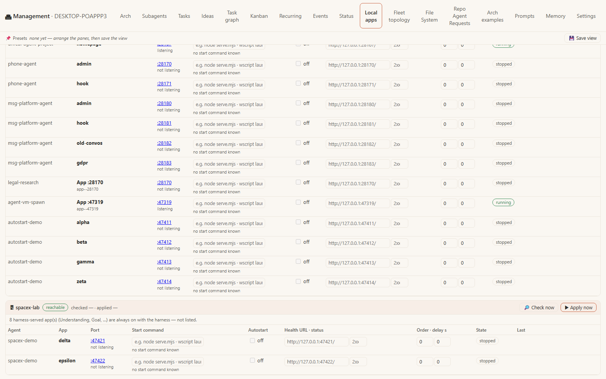
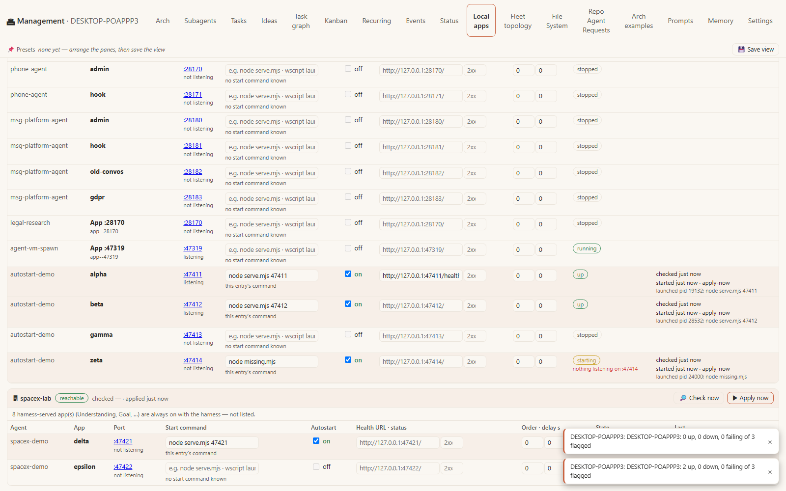
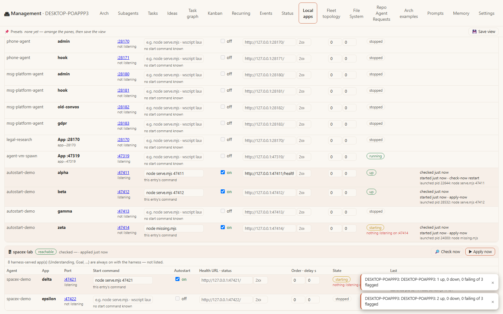
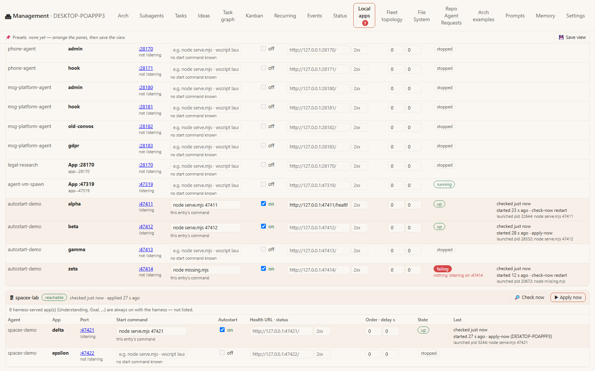
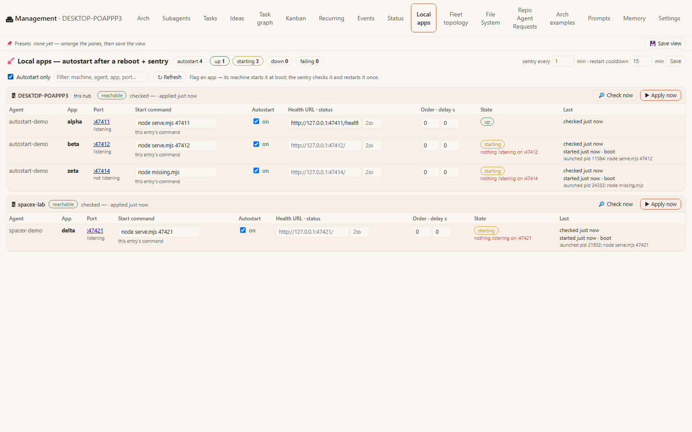

One flagged app. Press the events in any order and watch the state the tab would show — and when the sentry launches it.
hub — Management → Local apps every machine (the hub too)
────────────────────────────── ─────────────────────────────────────────
toggle / health URL / order ─► local-apps-fleet.json (single writer, a version per machine)
│ slice
├─► hub: local-apps-autostart.json (direct)
└─► peer: POST /api/arch/peer/local-apps/flags
│
Apply now / Check now ─────────────────────────► LocalAppSentry ─ boot (20 s after start)
GET …/fleet ◄─ self + GET /api/arch/peer/local-apps ─ every N min (default 5)
red badge ◄─ GET …/summary ─ [AUTOSTART] log lines
arch: local_apps_status (read-only, role v22)
| Probe | the health URL (expected status, else 2xx/3xx) — else the TCP port |
|---|---|
| Start command | the entry's own (any line; a VBS launcher = wscript launch.vbs) — else the discovered one for that port — else none: cannot be flagged |
| Never touched | apps that are not flagged; harness-served apps (always on) |
| No loops | one restart attempt, then failing until it answers or the Operator applies; a cooldown stops a flapping app |
power on ─► Windows ─► ClaudeWebKeepAlive (scheduled task: at startup + at logon)
└─ every 15 s: /api/health down? ─► start ClaudeWeb.exe
─► harness up ─► +20 s ─► boot pass: start the flagged apps (order, delay)
─► every 5 min: sentry pass
Once per machine, the Operator:
- Arm the watchdog: on that machine's harness, the header's Harness keep-alive watchdog tile → Set up auto-start (admin once). It says Auto-start armed when done.
- This build on that machine (an older peer shows "older build … upgrade it" in the tab).
- A start command for every app to keep up — typed in the tab, or Discover on its repo. Today almost none of the registered apps have one.




